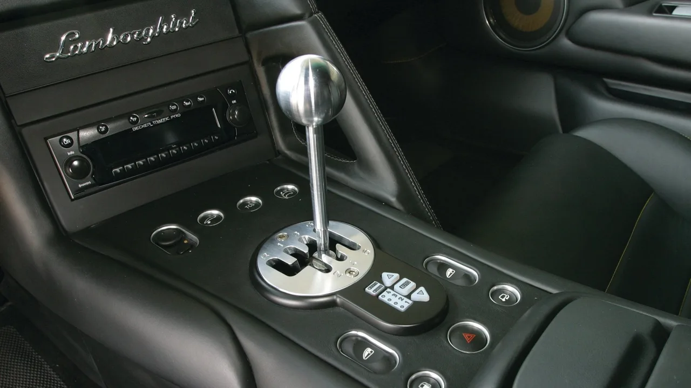
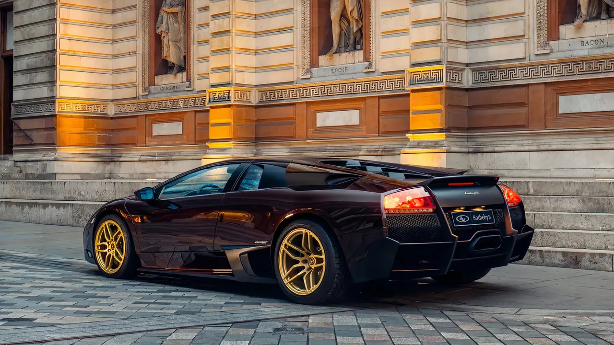
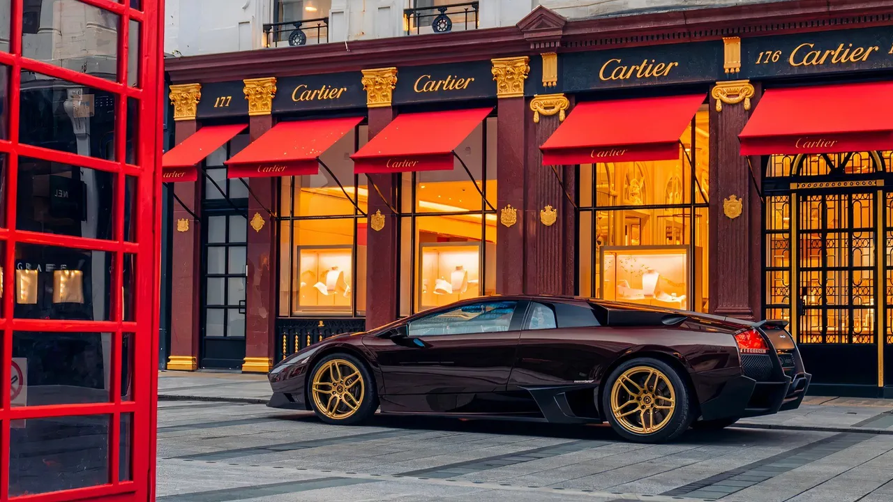
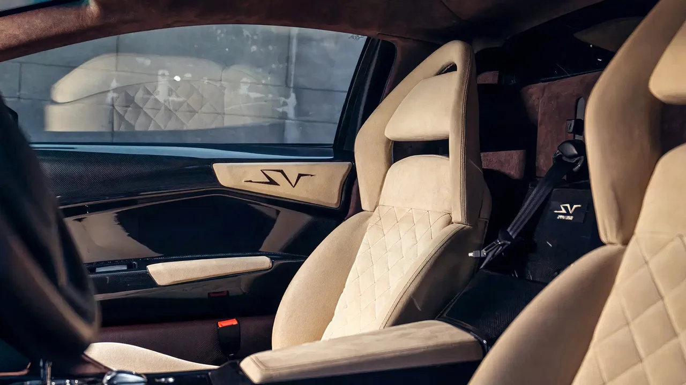

▲ 람보르기니 무르시엘라고 LP670-4 SV. 수동변속기가 얹힌 마지막 V12 람보르기니다
수동변속기가 제조사들에게 버림받았다는 사실은 비밀이 아닙니다. 운전의 몰입도를 높이는 가장 쉬운 방법 하나가 점점 사라지고 있습니다.
다만 람보르기니는 그 전에 제대로 배웅한 적이 있습니다. 플래그십 라인업에서, V12와 함께.
1. 2000년대에 벌어진 일
2000년대에 고성능차에 빠른 자동변속기를 넣는 것은 단순한 설계 유행 이상이었습니다.
변속 시간을 줄여 성능을 끌어올렸습니다. 동시에 전문 드라이버가 아닌 사람도 이런 초고속 차량을 훨씬 쉽게 다룰 수 있게 만들었습니다. 클러치를 밟으며 변속 타이밍을 맞춰야 하는 부담을 덜어줬고, 눈 깜빡할 사이의 다운시프트 덕분에 차의 밸런스도 더 잘 유지됐습니다.
| 제조사 | 기술 | 시기 |
|---|---|---|
| 페라리 | F1 기어박스 | 1990년대 후반~2000년대 초 |
| 포르쉐 | 팁트로닉 | 1989년 도입 후 지속 개선 |
| 람보르기니 | 6단 E-Gear | 2000년대 초 — 무르시엘라고·가야르도 |

▲ 금속 게이트를 넘나드는 시프터. 이 기계식 감각이 아벤타도르부터 사라졌다 ⓒ CarBuzz
2. 람보르기니의 선택
아우디 산하로 들어간 람보르기니도 2000년대 초 이 흐름에 합류했습니다. 무르시엘라고와 새로 나온 가야르도 모두 6단 자동화 싱글클러치 E-Gear를 받았습니다.
그리고 그것이 히트했습니다. 얼마 지나지 않아 대부분의 고객이 비싼 슈퍼카를 E-Gear로 주문하기 시작했습니다.
📍 E-Gear가 수동을 밀어낸 방식
E-Gear는 수동변속기를 기계가 조작하는 방식입니다. 클러치는 하나뿐이라 지금의 듀얼클러치만큼 매끄럽지는 않았습니다.
그래도 사람보다 빨랐고, 무엇보다 주문할 때 더 최신처럼 보였습니다. 결국 수요가 한쪽으로 몰렸습니다.
3. 그래서 아벤타도르에는 없었습니다
결과는 분명했습니다. 람보르기니는 무르시엘라고의 후속인 아벤타도르를 7단 자동 전용으로만 내놓기로 하고, 수동을 완전히 없앴습니다.
그 결정이 무르시엘라고를 마지막으로 만들었습니다. 수동변속기를 얹은 마지막 V12 람보르기니라는 자리입니다.

▲ 무르시엘라고 LP670-4 SV. 라인업의 정점이자 수동 V12의 마지막 자리다 ⓒ CarBuzz
4. 그리고 색은 갈색이었습니다
이 이야기의 주인공은 한 대의 특정 차량입니다. 2010년식 무르시엘라고 LP670-4 SV, 그리고 색은 갈색입니다.
슈퍼카에서 갈색은 흔한 선택이 아닙니다. 노랑과 초록, 주황이 지배하는 세계에서 갈색은 오히려 튑니다. 금색 휠과 맞물리면서 이 차는 다른 무르시엘라고와 확실히 구분됩니다.

▲ 갈색 바디에 금색 휠. 슈퍼카에서 흔치 않은 조합이 오히려 존재감을 만든다 ⓒ CarBuzz
5. 실내
SV는 무르시엘라고 라인업의 정점이었습니다. 경량화와 출력 향상이 함께 이뤄진 최종 사양입니다.
실내에는 SV 로고가 새겨진 시트가 들어갑니다. 그리고 그 옆에 금속 게이트를 지닌 수동 시프터가 놓입니다. 지금은 어떤 신차에서도 볼 수 없는 조합입니다.

▲ SV 전용 시트와 수동 게이트. 이 조합은 이제 신차로 만들어지지 않는다 ⓒ CarBuzz
6. 왜 지금 다시 보나
수동 슈퍼카의 가치는 최근 몇 년 사이 빠르게 올랐습니다. 이유는 단순합니다. 다시 만들어지지 않기 때문입니다.
전동화가 진행되면서 이 흐름은 되돌아올 가능성이 더 낮아졌습니다. 하이브리드 V12에 수동을 얹는 일은 기술적으로도, 상품 기획으로도 성립하기 어렵습니다.
그래서 무르시엘라고는 특별한 자리에 남습니다. 가장 빠른 람보르기니도, 가장 아름다운 람보르기니도 아니지만, 수동으로 V12를 젓는 마지막 경험을 제공하는 차입니다. 그리고 이 개체는 그것을 갈색으로 합니다.